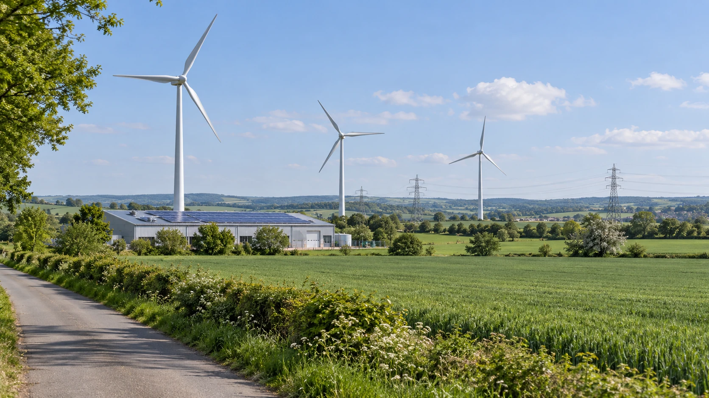

ECB Sees Cleaner Energy and AI Demand Cushioning Europe’s Energy Shock
New ECB analysis separates lasting reductions in fossil-fuel exposure from temporary support provided by government spending and AI investment.

The euro area has absorbed this year’s energy shock better than feared because its economy uses less fossil fuel, while public spending and demand linked to artificial intelligence have supported activity, European Central Bank economists said in analysis published Wednesday.
The authors distinguish structural protection from support that could fade. That matters for investors assessing whether European businesses can sustain earnings when energy remains expensive: resilience during one shock does not establish immunity to another.
Using less oil changes the exposure
The ECB estimates that oil intensity, measured against real economic output, is roughly half its early-1990s level. More renewable and nuclear electricity also reduces the frequency with which gas generation determines power prices. The finding concerns exposure per unit of activity, rather than a claim that Europe has stopped importing energy.
The European Commission’s explanation of electricity markets helps clarify the mechanism. Gas and coal generators face fuel costs that wind and solar operators do not. Electricity can also flow across interconnected national systems, allowing cheaper available generation to serve demand elsewhere. The resulting price depends on the generation mix, available connections and conditions at the time electricity is needed.
A larger renewable fleet therefore changes the supply options available to the market. It cannot guarantee cheap power in every hour. Weather changes both demand and renewable output, while limitations on cross-border connections can prevent low-cost electricity from reaching a neighboring market. Storage, flexible consumption and networks remain relevant alongside the number of turbines or panels installed.
Retail bills introduce another layer. The Commission distinguishes the energy component from network charges and taxes. A fall in wholesale electricity prices need not reduce the entire customer bill by the same proportion because maintaining the grid and collecting taxes are separate costs. Comparing wholesale prices with a household’s final bill without accounting for those components can exaggerate the apparent disconnect.
The ECB’s September research on energy-price transmission also emphasizes differences in contracts, charges and national arrangements. Wholesale movements can reach consumer gas and electricity indices at different speeds and with different intensity. Consequently, improved generation economics can coexist with households still experiencing elevated bills.
Public spending and AI provide a different kind of buffer
Wednesday’s analysis puts the 2026 fiscal loosening at about 0.5 percentage points of GDP, compared with 0.25 expected in December. Germany’s defense and infrastructure spending is the main driver. This measures a change in the fiscal stance, not a calculated 0.5-percentage-point contribution to GDP growth.
The authors also identify AI-related exports and investment as support for demand. These are potential offsets to an energy shock, but they differ from permanently reducing fuel consumption. An order supported by a spending boom still depends on the customer’s willingness and ability to keep investing.
For a business assessment, those channels should be examined separately. Lower energy use can reduce sensitivity to an input-price increase. A government contract or technology order supports revenue. A company may benefit from one without benefiting from the other, and an aggregate improvement does not reveal the position of every manufacturer.
Resilient growth does not settle the interest-rate question
The ECB’s monetary-policy framework explains why borrowing conditions remain part of the picture. Expected policy changes affect market rates and the rates banks charge customers. Higher financing costs can discourage investment and consumption, while exchange-rate movements can change import prices. Those effects operate with uncertain delays, so today’s activity does not reveal the full effect of earlier financial tightening.
That leaves investors with two separate questions: how well the economy absorbs energy costs, and how persistent inflation becomes. Stronger demand can support company sales while complicating the task of containing price increases. The Wednesday blog is an economic assessment, not a new interest-rate decision or a promise about the ECB’s next meeting.
For U.S. readers following European stocks or the euro, the useful distinction is between durable efficiency gains and spending-dependent demand. The two can support growth together, but their durability differs. That distinction also helps explain why central banks can respond differently to a shared global shock.
Sources and methodology
Sources checked October 21, 2026. Reported findings and company statements are attributed in the text; discussion of their financial implications is editorial analysis. The generated cover is illustrative.
- ECB, October 21: euro-area resilience, energy exposure and fiscal-stance estimates
- European Commission: electricity market structure and components of retail bills; background
- ECB, September Economic Bulletin: transmission of wholesale energy prices to consumer bills; background
- ECB: monetary-policy transmission mechanism; background